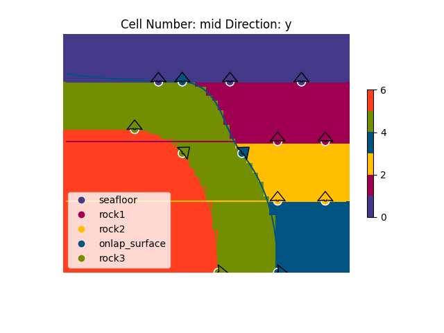
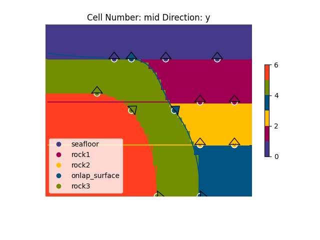
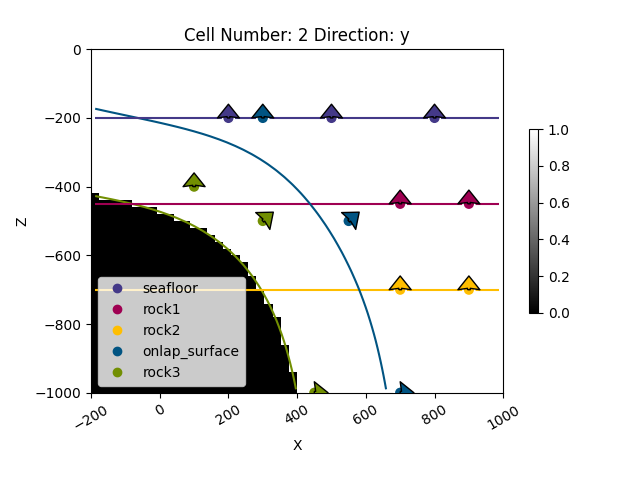
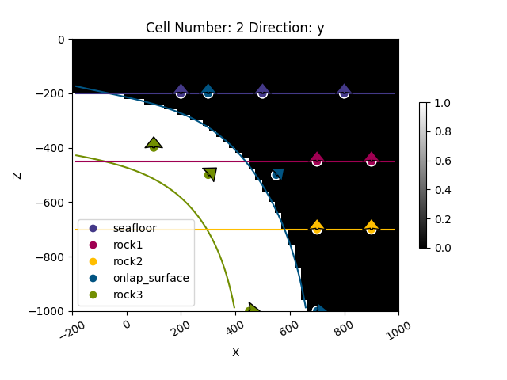

Note
Go to the end to download the full example code
1.4: Unconformity relationships¶
# sphinx_gallery_thumbnail_number = 2
Importing gempy
import gempy as gp
import gempy_viewer as gpv
# Aux imports
import numpy as np
import os
np.random.seed(1515)
We import a model from an existing folder, representing a subduction zone with onlap relationships.
data_path = os.path.abspath('../../')
geo_model: gp.data.GeoModel = gp.create_geomodel(
project_name='Onlap_relations',
extent=[-200, 1000, -500, 500, -1000, 0],
resolution=[50, 50, 50],
refinement=6,
importer_helper=gp.data.ImporterHelper(
path_to_orientations=data_path + "/data/input_data/tut-ch1-4/tut_ch1-4_orientations.csv",
path_to_surface_points=data_path + "/data/input_data/tut-ch1-4/tut_ch1-4_points.csv",
)
)
gp.set_topography_from_random(grid=geo_model.grid, d_z=np.array([-600, -100]))
Active grids: ['regular' 'topography']
<gempy.core.data.grid_modules.topography.Topography object at 0x7f856496c760>
gpv.plot_2d(geo_model)
<gempy_viewer.modules.plot_2d.visualization_2d.Plot2D object at 0x7f8561068640>
Raw structural frame
geo_model.transform.apply_anisotropy(gp.data.GlobalAnisotropy.NONE)
gp.add_structural_group(
model=geo_model,
group_index=0,
structural_group_name="seafloor_series",
elements=[geo_model.structural_frame.get_element_by_name("seafloor")],
structural_relation=gp.data.StackRelationType.ERODE,
)
gp.add_structural_group(
model=geo_model,
group_index=1,
structural_group_name="right_series",
elements=[
geo_model.structural_frame.get_element_by_name("rock1"),
geo_model.structural_frame.get_element_by_name("rock2"),
],
structural_relation=gp.data.StackRelationType.ONLAP
)
gp.add_structural_group(
model=geo_model,
group_index=2,
structural_group_name="onlap_series",
elements=[geo_model.structural_frame.get_element_by_name("onlap_surface")],
structural_relation=gp.data.StackRelationType.ERODE
)
gp.add_structural_group(
model=geo_model,
group_index=3,
structural_group_name="left_series",
elements=[geo_model.structural_frame.get_element_by_name("rock3")],
structural_relation=gp.data.StackRelationType.BASEMENT
)
gp.remove_structural_group_by_name(model=geo_model, group_name="default_formation")
# Final structural frame
geo_model.structural_frame
Setting Backend To: AvailableBackends.numpy
/home/leguark/gempy/gempy/core/data/geo_model.py:118: UserWarning: Both octree levels and resolution are set. The default grid for the `raw_array_solution`and plots will be the dense regular grid. To use octrees instead, set resolution to None in the regular grid.
warnings.warn("Both octree levels and resolution are set. The default grid for the `raw_array_solution`"
/home/leguark/gempy_engine/gempy_engine/modules/dual_contouring/dual_contouring_interface.py:38: RuntimeWarning: divide by zero encountered in divide
weight_x = ((scalar_at_sp - scalar_8[:, :, 4:]) / scalar_dx).reshape(-1, 4, 1)
/home/leguark/gempy_engine/gempy_engine/modules/dual_contouring/dual_contouring_interface.py:39: RuntimeWarning: divide by zero encountered in divide
weight_y = ((scalar_at_sp - scalar_8[:, :, [2, 3, 6, 7]]) / scalar_d_y).reshape(-1, 4, 1)
/home/leguark/gempy_engine/gempy_engine/modules/dual_contouring/dual_contouring_interface.py:48: RuntimeWarning: invalid value encountered in multiply
intersect_dx = d_x[:, :, :] * weight_x[:, :, :]
/home/leguark/gempy_engine/gempy_engine/modules/dual_contouring/dual_contouring_interface.py:49: RuntimeWarning: invalid value encountered in multiply
intersect_dy = d_y[:, :, :] * weight_y[:, :, :]
/home/leguark/gempy_engine/gempy_engine/modules/dual_contouring/dual_contouring_interface.py:38: RuntimeWarning: divide by zero encountered in divide
weight_x = ((scalar_at_sp - scalar_8[:, :, 4:]) / scalar_dx).reshape(-1, 4, 1)
/home/leguark/gempy_engine/gempy_engine/modules/dual_contouring/dual_contouring_interface.py:39: RuntimeWarning: divide by zero encountered in divide
weight_y = ((scalar_at_sp - scalar_8[:, :, [2, 3, 6, 7]]) / scalar_d_y).reshape(-1, 4, 1)
/home/leguark/gempy_engine/gempy_engine/modules/dual_contouring/dual_contouring_interface.py:48: RuntimeWarning: invalid value encountered in multiply
intersect_dx = d_x[:, :, :] * weight_x[:, :, :]
/home/leguark/gempy_engine/gempy_engine/modules/dual_contouring/dual_contouring_interface.py:49: RuntimeWarning: invalid value encountered in multiply
intersect_dy = d_y[:, :, :] * weight_y[:, :, :]
 
<gempy_viewer.modules.plot_3d.vista.GemPyToVista object at 0x7f8564aef460>
gpv.plot_2d(
model=geo_model,
cell_number=2,
override_regular_grid=geo_model.solutions.raw_arrays.mask_matrix[0],
show_data=True, kwargs_lithology={'cmap': 'gray', 'norm': None}
)
gpv.plot_2d(
model=geo_model,
cell_number=2,
override_regular_grid=geo_model.solutions.raw_arrays.mask_matrix[1],
show_data=True, kwargs_lithology={'cmap': 'gray', 'norm': None}
)
gpv.plot_2d(
model=geo_model,
cell_number=2,
override_regular_grid=geo_model.solutions.raw_arrays.mask_matrix[2],
show_data=True, kwargs_lithology={'cmap': 'gray', 'norm': None}
)
gpv.plot_2d(
model=geo_model,
cell_number=2,
override_regular_grid=geo_model.solutions.raw_arrays.mask_matrix[3],
show_data=True, kwargs_lithology={'cmap': 'gray', 'norm': None}
)


- 
<gempy_viewer.modules.plot_2d.visualization_2d.Plot2D object at 0x7f8561522350>
gpv.plot_2d(
model=geo_model,
cell_number=2,
override_regular_grid=geo_model.solutions.raw_arrays.mask_matrix_squeezed[0],
show_data=True, kwargs_lithology={'cmap': 'gray', 'norm': None}
)
gpv.plot_2d(
model=geo_model,
cell_number=2,
override_regular_grid=geo_model.solutions.raw_arrays.mask_matrix_squeezed[1],
show_data=True, kwargs_lithology={'cmap': 'gray', 'norm': None}
)
gpv.plot_2d(
model=geo_model,
cell_number=2,
override_regular_grid=geo_model.solutions.raw_arrays.mask_matrix_squeezed[2],
show_data=True, kwargs_lithology={'cmap': 'gray', 'norm': None}
)
gpv.plot_2d(
model=geo_model,
cell_number=2,
override_regular_grid=geo_model.solutions.raw_arrays.mask_matrix_squeezed[3],
show_data=True, kwargs_lithology={'cmap': 'gray', 'norm': None}
)

- 
<gempy_viewer.modules.plot_2d.visualization_2d.Plot2D object at 0x7f856190f580>
Total running time of the script: (0 minutes 9.933 seconds)